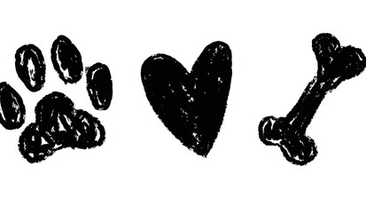

Bienvenida al Proyecto PAEC
¡Hola! Bienvenidos a Huellitas Comunitarias, un espacio creado como parte de nuestro proyecto PAEC para fomentar el respeto, el amor y el cuidado responsable hacia los animales de nuestra comunidad.

¡Hola! Bienvenidos a Huellitas Comunitarias, un espacio creado como parte de nuestro proyecto PAEC para fomentar el respeto, el amor y el cuidado responsable hacia los animales de nuestra comunidad.
Nuestro objetivo principal es concientizar a la sociedad sobre la situación de abandono que enfrentan muchos perritos y gatitos, promoviendo alternativas reales como la adopción responsable, la esterilización y el apoyo a centros de acopio locales.
"Un animal de compañía no es un juguete temporal, es una vida que confía plenamente en nosotros." Adoptar cambia dos vidas: la del peludo que encuentra un hogar y la tuya al recibir un amor incondicional. ¡Di no al maltrato y sí a la adopción!